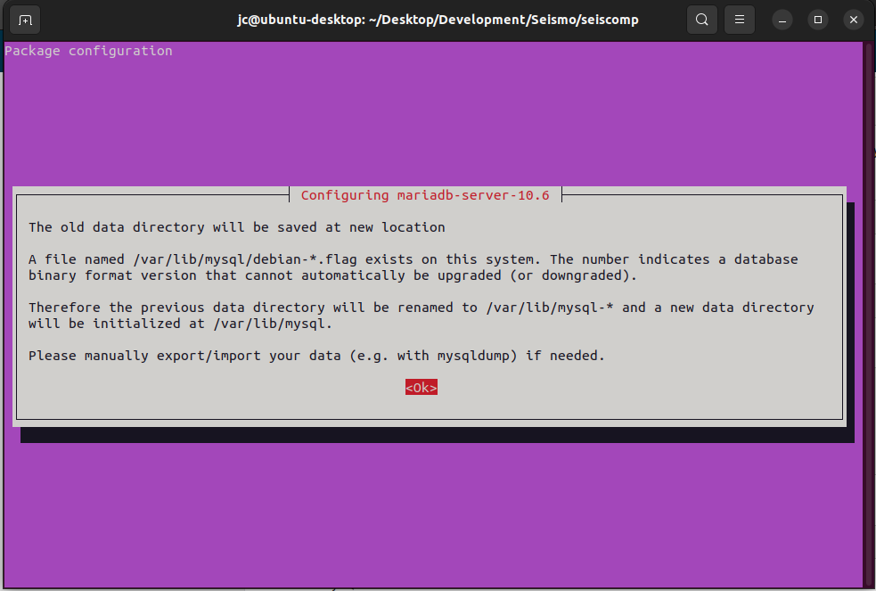

Introduction To SeisComp¶
SeisComp is a seismological software that has been developed collaboratively by the GEOFON Program at Helmholtz Centre Potsdam GFZ German Research Centre for Geosciences and gempa GmbH. It plays a vital role in various aspects of seismological operations, encompassing data acquisition, processing, distribution, and interactive analysis.
While SeisComP is employed by the EarthquakeHub Network for processing seismic data sourced through citizen science efforts, it’s important to note that its use is not an absolute requirement within the EarthquakeHub Network. Alternative data processing software capable of handling miniseed data can also be employed for processing network data.
SeisComP encompasses a suite of modular components, each dedicated to specific tasks, including:
Global Parameters: Unified schema for configuring each modules.
Acquisition: Responsible for data collection.
Inventory: Manages network information.
Messaging: Facilitates communication between system elements.
Processing: Executes advanced data analysis and interpretation.
Utilities: Offers various auxiliary tools for enhanced functionality.
Installation from Pre-Compiled Release Package¶
This guide provides instructions for installing SeisComP packages on machines running Ubuntu. These guide works for Ubuntu 20.04 and 22.04, as of this writing. For more comprehensive installation details, please consult the official documentation.
Begin by creating a directory where you intend to download and install SeisComP packages.
Navigate to the directory you’ve just created and download the appropriate SeisComP binary package compatible with your Linux distribution and architecture. You can obtain this package from the SeisComP download site.
Within the same directory, retrieve the SeisComP maps using the following command:
wget "https://www.seiscomp.de/downloader/seiscomp-maps.tar.gz"
Unpack the
seiscomp*files, which include the binary package, maps, and documentation:tar xzf seiscomp-4.0.0-ubuntu20.04-x86_64.tar.gz
tar xzf seiscomp-maps.tar.gz
tar xzf seiscomp-4.0.0-doc.tar.gz
Note
For some packages, documentations are already included in the downloaded seiscomp package so there is no need to download and unpack the documentation.
You may check that all files are properly unpacked by running the ls command:
ls seiscomp
bin etc include lib man sbin share
Execute the following commands to install dependencies and set up the environment:
/seiscomp/bin/seiscomp install-deps base
Note
Depending on your Ubuntu version, additional steps may be required to address specific dependencies:```
On Ubuntu 18: Install Python and related libraries:
sudo apt-get install python libqtgui4
On Ubuntu 20 and newer: Ensure libpython3-dev is installed:
sudo apt-get install libpython3-dev
Alternatively, for Mint 18 (Ubuntu 16.04):
sudo apt-get update
sudo apt-get install libxml2 libboost-filesystem1.58.0 libboost-iostreams1.58.0 libboost-thread1.58.0 libboost-program-options1.58.0 libboost-regex1.58.0 libboost-signals1.58.0 libboost-system1.58.0 libssl1.0.0 libncurses5 libmysqlclient20 libpq5 libpython2.7 python-numpy mysql-server mysql-client libqtgui4 libqt4-xml libqt4-opengl libqt4-sql-sqlite
Configure the database. You may choose to use either MariaDB or a MySQL for the database.
For a MariaDB installation:
./seiscomp/bin/seiscomp install-deps mariadb-server

For a MySQL installation:
./seiscomp/bin/seiscomp install-deps mysql-server
```
## Getting Started
After installing seiscomp packages and configuring database, the next step is to setup seiscomp using `seiscomp setup` or the wizard from within scconfig.
1. Execute setup via:
```{note}
In seiscomp setup default values are given in brackets [ ]:
seiscomp/bin/seiscomp setup
====================================================================
seiscomp setup
====================================================================
This initializes the configuration of your installation.
If you already made adjustments to the configuration files
be warned that this setup will overwrite existing parameters
with default values. This is not a configurator for all
options of your setup but helps to setup initial standard values.
--------------------------------------------------------------------
Hint: Entered values starting with a dot (.) are handled
as commands. Available commands are:
quit: Quit setup without modification to your configuration.
back: Go back to the previous parameter.
help: Show help about the current parameter (if available).
If you need to enter a value with a leading dot, escape it
with backslash, e.g. "\.value".
--------------------------------------------------------------------
This will ask for initial settings. You may just leave the default values for the following details:
Organization name []:
Enable database storage [yes]:
0) mysql
MySQL server.
1) postgresql
PostgreSQL server. There is currently no support in setup to create the
database for you. You have to setup the database and user accounts on
your own. The database schema is installed under share/db/postgresql.sql.
Database backend [0]:
Create database [yes]:
For database root password, you may enter your desired password
MYSQL root password (input not echoed) []:
Drop existing database [no]:
Database name [seiscomp]:
Database hostname [localhost]:
Specify the desired user and password for both read-write and read-only access parameters.
Database read-write user [sysop]:
Database read-write password [sysop]:
Database public hostname [localhost]:
Database read-only user [sysop]:
Database read-only password [sysop]:
After addressing all questions, you’ll need to make a final decision: proceed to create the initial configuration, return to the previous question, or exit without making any changes. Press
to save the initial setup.
Finished setup
--------------
P) Proceed to apply configuration
B) Back to last parameter
Q) Quit without changes
Command? [P]:
Adding New Station¶
In order to process seismic data within SeisComP, it’s essential to define a data source, which is typically represented by a station. Follow these steps to add a new station to your SeisComP setup:
You will need
inventoryof the new station to be added. This information is typically stored in.ymlformat. To acquire the inventory, you can refer to the guide on how to fetch inventory using FDSNWS.Once you have acquired the inventory data, the next step is to import it into SeisComP. Navigate to the terminal where SeisComP is installed and execute the following command:
./seiscomp/bin/seiscomp exec import_inv fdsnxml ./inventory_CLL.xml
The following output should be shown:
Generating output to /home/user/seiscomp/etc/inventory/inventory_CLL.xml
No inventory read from inventory db
Create empty one
Processing /home/user/inventory_CLL.xml
- parsing StationXML
- converting into SeisComP-XML
Finished processing
Writing inventory to /home/user/seiscomp/etc/inventory/inventory_CLL.xml
After successfully importing the inventory, update the SeisComP configuration by running:
seiscomp update-config
Getting Real-time Data from a Remote Seedlink Server¶
Important concepts to know about seiscomp¶
Messaging: Exchanging information in real-time processing
Database: Storing meta data, configurations and data products
Modules: Daemon programs and command-line tools
Inventory: Station meta data
Configuration: Inventory, module and binding configurations